08_RK3399_PCIe芯片手册解读#
RK3399_PCIe芯片手册解读#
参考资料：
《PCI Express Technology 3.0》，Mike Jackson, Ravi Budruk; MindShare, Inc.
《PCIe扫盲系列博文》，作者Felix，这是对《PCI Express Technology》的理解与翻译
《PCI EXPRESS体系结构导读 (王齐)》
《PCI Express_ Base Specification Revision 4.0 Version 0.3 ( PDFDrive )》
《NCB-PCI_Express_Base_5.0r1.0-2019-05-22》
开发板资料：
芯片手册：Rockchip RK3399TRM V1.3 Part2.pdf 《Chapter 17 PCIe Controller》
doc_and_source_for_drivers\IMX6ULL\doc_pic\ 10_PCI_PCIe\芯片手册\RK3399 Rockchip RK3399TRM V1.3 Part2.pdf
https://wiki.t-firefly.com/zh_CN/ROC-RK3399-PC-PLUS/
AXI相关：
ug1037-vivado-axi-reference-guide.pdf
doc_and_source_for_drivers\IMX6ULL\doc_pic\10_PCI_PCIe\协议\AXI ug1037-vivado-axi-reference-guide.pdf
1. AXI总线#
1.1 连接方式#
我们一直使用这个图来简化CPU与外设之间的连接：
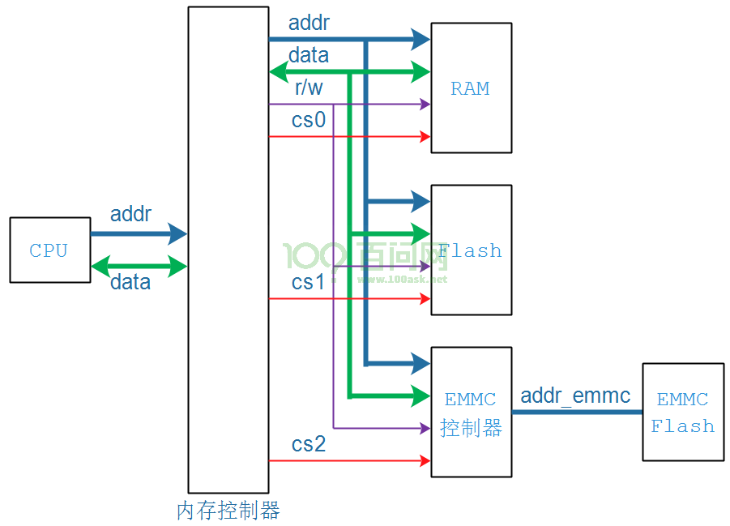
实际芯片中，CPU与外设之间的连接更加复杂，高速设备之间通过AXI总线连接。AXI总线总传输数据的双方分为Master和Slave，Master发起传输，Slave回应传输。Master和Slave是多对多的关系，它们之间读、写可以同时进行的，内部结构图如下：
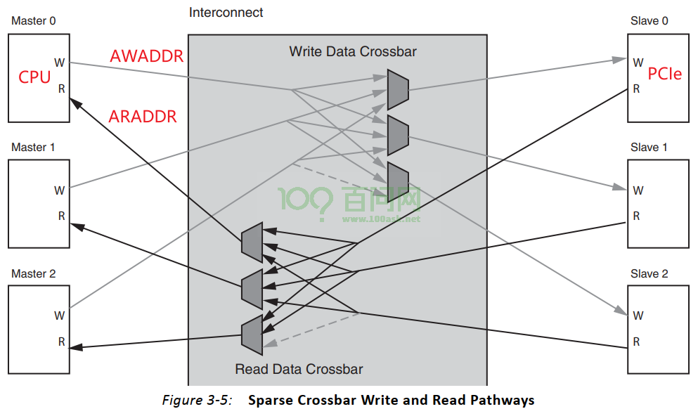
1.2 五个通道#
在AXI总线中，读写可以同时进行，有5个通道：
读：
读地址通道：传输读操作的地址
读数据通道：传输读到的数据
写：
写地址通道：传输写操作的地址
写数据通道：传输要写的数据
写响应通道：传输写操作的结果
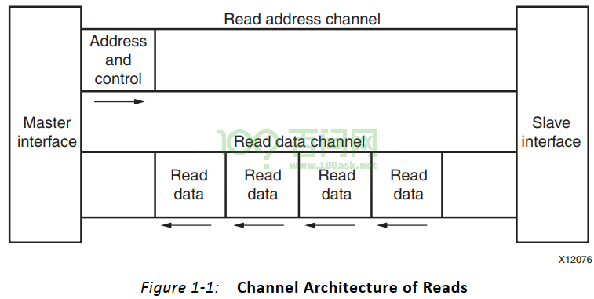
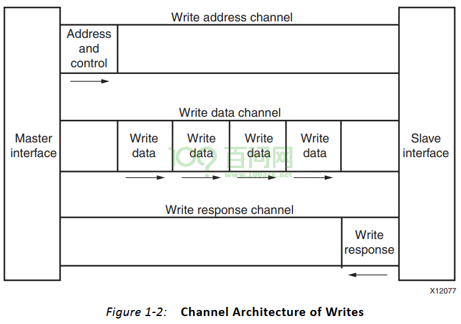
通道名称 |
通道功能 |
数据流向 |
|---|---|---|
read address |
读地址通道 |
主机->从机 |
read data |
读数据通道（包括数据通道和读响应通道） |
从机->主机 |
write address |
写地址通道 |
主机->从机 |
write data |
写数据通道 |
主机->从机 |
write response |
写响应通道 |
从机->主机 |
1.3 信号线#
我们只列出本节视频关心的信号线：
信号 |
AXI4 |
AXI4-Lite |
|---|---|---|
AWADDR |
写地址通道：地址线，最多可达64位 |
写地址通道：地址线，最多可达64位 |
WDATA |
写数据通道：数据线，32~1024位 |
写数据通道：数据线，32位 |
ARADDR |
读地址通道：地址线，最多可达64位 |
读地址通道：地址线，最多可达64位 |
RDATA |
读数据通道：数据线，32~1024位 |
写数据通道：数据线，32位 |
1.4 PCIe控制器#
RK3399的PCIe控制器就是挂在AXI总线上，在芯片手册中可以看到：
AWADDR：AXI总线的写地址通道地址线，简单理解就是CPU要写PCIe控制器时发出的地址线
ARADDR ：AXI总线的读地址通道地址线，简单理解就是CPU要读PCIe控制器时发出的地址线
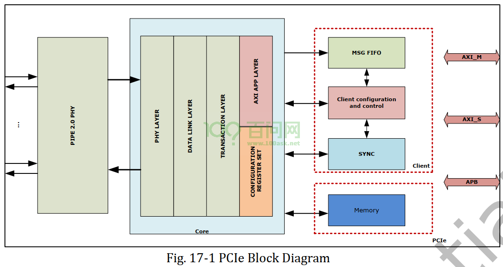
2. 地址空间和寄存器介绍#
2.1 想达到的目的#
使用PCIe时，我们编程时想达到这个目的：
CPU读写某个地址，就可以读写某个PCIe设备的配置空间：
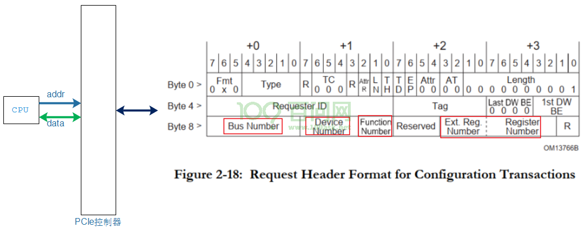
CPU读写某个地址，就可以读写某个PCIe设备的内存、寄存器：
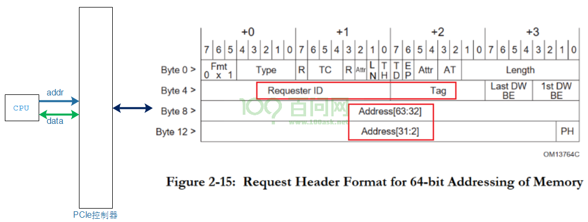
简单地说，就是把CPU发出的addr，转换为右边的TLP头部：PCI地址、头部的其他信息。
这涉及两部分：
怎么把CPU地址转换为PCI地址
怎么提供TLP头部信息中的其他部分
2.2 地址空间#
RK3399访问PCIe控制器时，CPU地址空间可以分为：
Client Register Set：地址范围 0xFD000000~0xFD7FFFFF，比如选择PCIe协议的版本(Gen1/Gen2)、电源控制等
Core Register Set ：地址范围 0xFD800000~0xFDFFFFFF，所谓核心寄存器就是用来进行设置地址映射的寄存器等
Region 0：0xF8000000~0xF9FFFFFF , 32MB，用于访问外接的PCIe设备的配置空间
Region 1：0xFA000000~0xFA0FFFFF，1MB，用于地址转换
Region 2：0xFA100000~0xFA1FFFFF，1MB，用于地址转换
……
Region 32：0xFBF00000~0xFBFFFFFF，1MB，用于地址转换
其中Region 0大小为32MB，Region1~31大小分别为1MB。
CPU访问Region 0的地址时，将会导致PCIe控制器发出读写配置空间的TLP。
CPU访问Region 1~32的地址时，将会导致PCIe控制器发出读写内存、IO空间的TLP。
2.3 寄存器介绍#
CPU访问一个地址，导致PCIe控制器发出TLP。TLP里含有PCIe地址、其他信息。
这些寄存器必定涉及这2部分：
地址转换：把CPU地址转换为PCIe地址
提供TLP的其他信息
Region0、Region1~32，每个Region都有类似的寄存器。
一个Region，可以用于读写配置空间，可以用于读写内存空间、可以用于读写IO空间，还可以用于读写消息。
这由Region对应的寄存器决定。
每个Region都有一样寄存器，以Region 0为例，有6个寄存器：
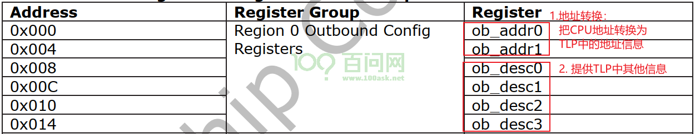
CPU访问某个Region时，它是想干嘛？
读写配置空间、发出对应TLP？
读写内存空间、发出对应TLP？
读写IO空间、发出对应TLP？
读写消息、发出对应TLP？
到底是发出哪种TLP，由Region对应的ob_desc0寄存器决定：
ob_desc0[3:0] |
作用 |
|---|---|
1010 |
发出的TLP用于访问Type 0的配置空间 |
1011 |
发出的TLP用于访问Type 1的配置空间 |
0010 |
发出的TLP用于读写内存空间 |
0110 |
发出的TLP用于读写IO空间 |
1100 |
发出的TLP是”Normal Message” |
1101 |
发出的TLP是”Vendor-Defined Message” |
CPU访问某个Region时，最终都是要发出TLP，TLP的内容怎么确定？
地址信息：ob_addr0/1把CPU地址转换为PCIe地址，提供TLP里面的地址信息
其他信息：ob_desc0/1/2/3提供TLP的其他信息
2.3.1 用于配置空间#
Region0一般用于读写配置空间，它对应的寄存器如下：
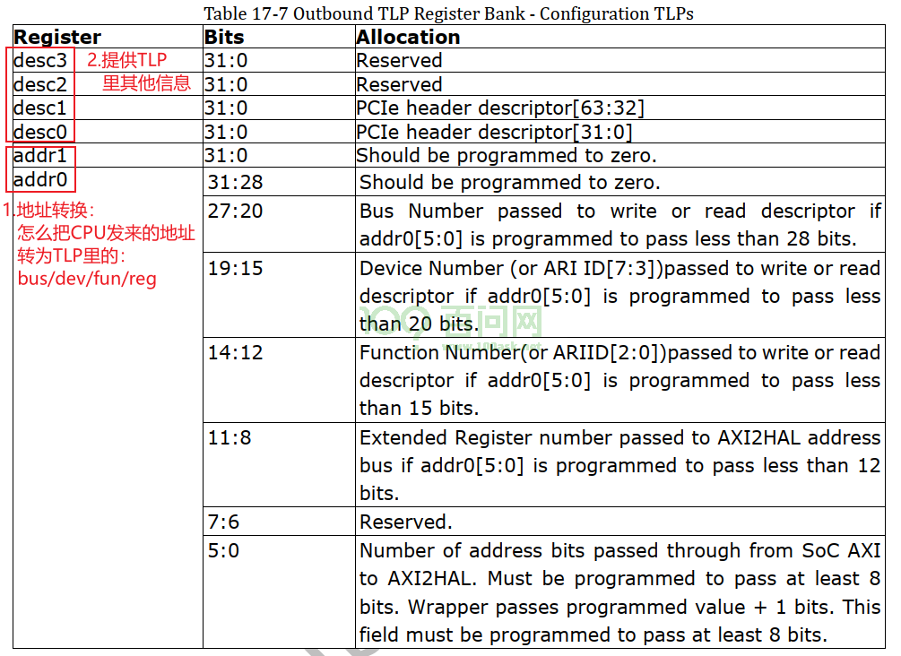
2.3.2 用于内存和IO#
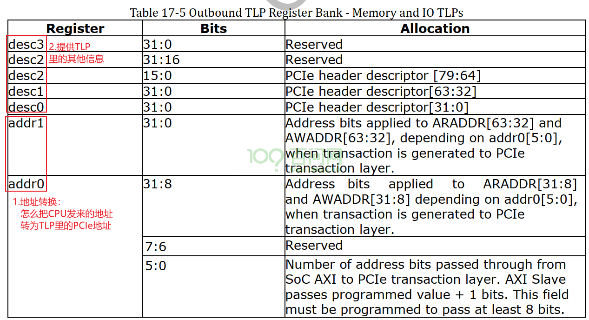
3. 访问示例#
3.1 配置空间读写示例#
要读写设备的配置空间，首先要定位：Bus/Dev/Function/Reg：
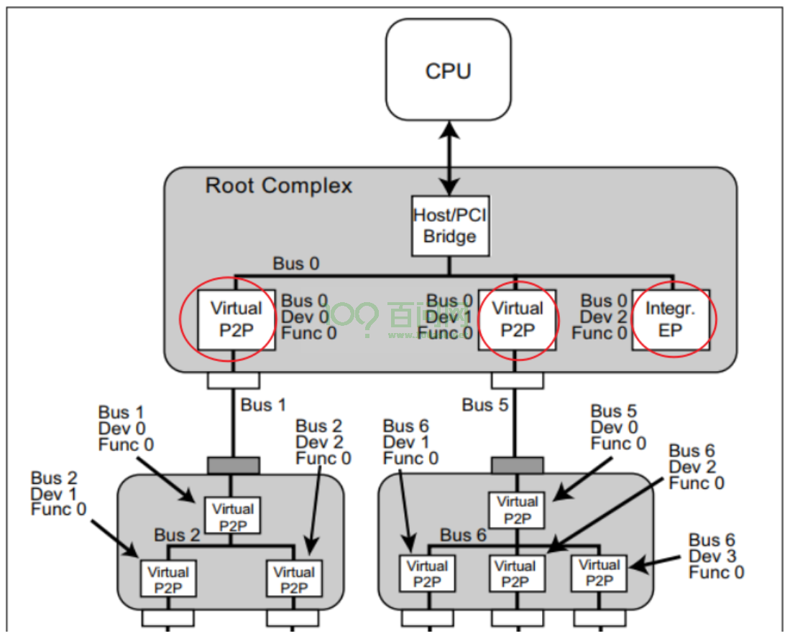
怎么发出这些”Bus/Dev/Function/Register”信息？如下图所示：
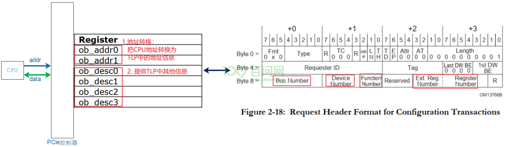
当Region 0的寄存器ob_desc0[3:0]被配置为读写配置空间时， CPU发出Region 0的地址，地址里面隐含有这些信息：
Bus：cpu_addr[27:20]
Dev：cpu_addr[19:15]
Fun：cpu_addr[14:12]
Reg：cpu_addr[11:0]
使用过程步骤如下。
3.1.1 配置Region 0用于读写配置空间#
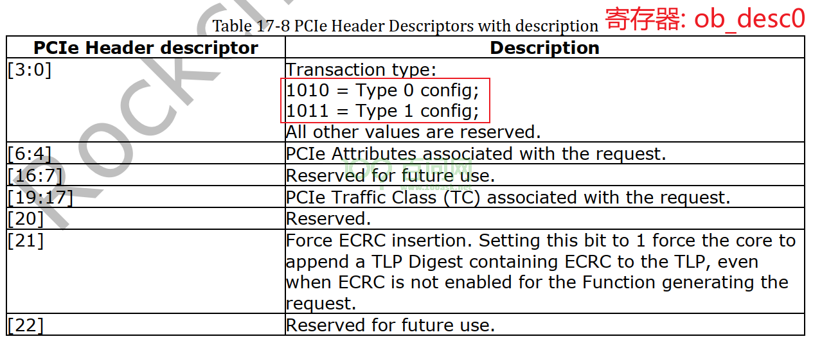
3.1.2 配置Region 0地址转换#
比如我们可以设置bit[5:0]为27，意味着cpu_addr[27:0]这28条地址线都会传入TLP。
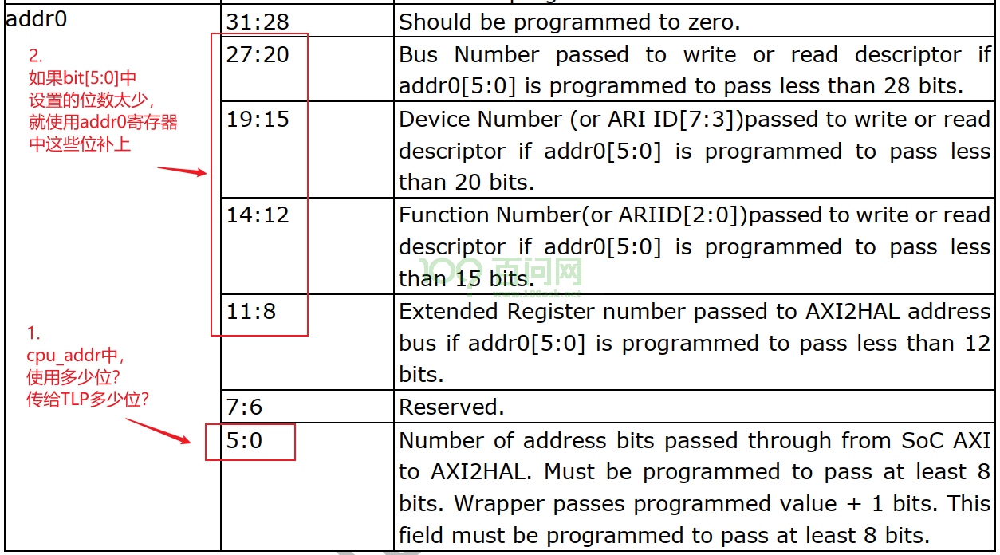
3.1.3 CPU读写Region 0的地址#
Region 0的地址范围是：0xF8000000~0xF9FFFFFF。
CPU想访问这个设备：Bus=bus,Dev=dev,Fun=fun,Reg=reg，那么CPU读写这个地址即可：
0xF8000000 + (bus<<20) | (dev<<15) | (fun<<12) | (reg)
3.2 MEM/IO读写示例#
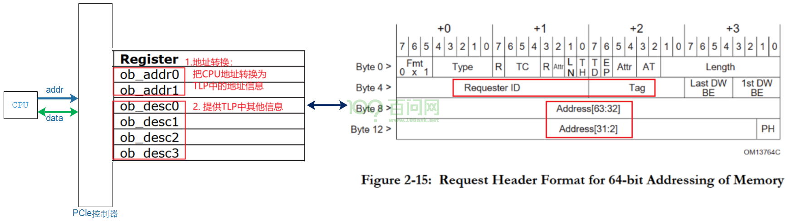
3.2.1 配置Region 1用于内存读写#
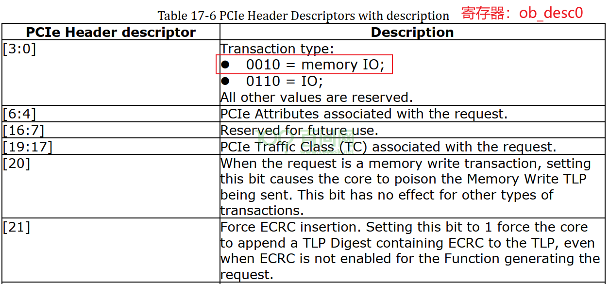
3.2.2 配置Region 1地址转换#
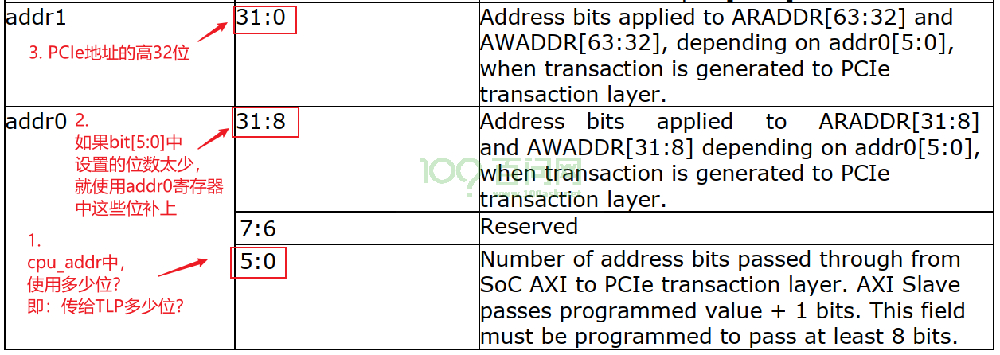
addr0、addr1寄存器里保存的是PCIe地址，也就是CPU发出这个Region的CPU地址后，将会转换为某个PCI地址。
怎么转换？由addr0、addr1决定。
Region 1的CPU地址范围是：0xFA000000~0xFA0FFFFF，是1M空间。
我们一般会让PCI地址等于CPU地址，所以这样设置：
addr0：
[5:0]等于19，表示CPU_ADDR[19:0]共20位地址传入TLP
[31:8]等于0xFA0000
addr1：设置为0
如上设置后，CPU读写地址时0xFA0?????，就会转换为PCI地址：0xFA0?????，转换过程如下：
pci_addr = cpu_addr[19:0] | (addr0[31:20] << 20) | (addr1<<32)
= 0x????? + (0xFA0 << 20) | (0 << 32)
= 0xFA0?????